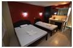
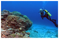

Cebu
Where to stay
As one of the most-developed provinces in the Philippines, Cebu hotels and resorts are the finest in providing quality accommodation for tourists and business travellers of the city.
Find Landmarks
Take a sightseeing getaway or a trip to Cebu historical landmarks and famous attractions that will show you itself the history of the place.
Find Adventure
Every day has its own significant matters whether it is a day or night, Cebu has several adventures that await you and promises you will come back for another challenges!
Find Wellness
There are places to get a good massage, Cebu has finally convinced people that it's not just a province to visit but a place you could enjoy for the rest of your stay. Stay away from the hustle and bustle of the city and take a break, pamper yourself in different spas here in Cebu.
Where to Dine
Traveling will not be complete without tasting the town's special foods. Grab a taste in one of the restaurants that serves mouth-watering and remarkable foods that will definitely mark Cebu City in your heart as one of your favorite place here in the Philippines.
Where to Party
It has been a tradition of every one of us that once in awhile we are bound to forget all the stress and pain of working too hard, the only solution to that is to enjoy the party life Cebu has to offer!